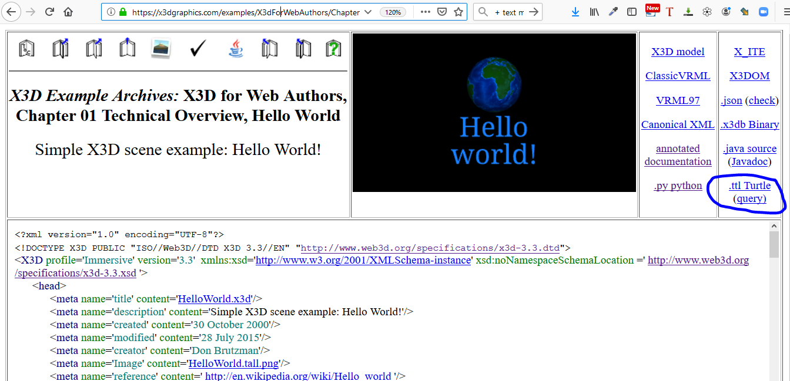

|
X3D Ontology for Semantic Web |
The X3D Ontology for Semantic Web provides terms of reference for semantic query of X3D models.
Motivation | Download | Design and Design Patterns | OWLDoc | Queries | References | Tools | TODO | Contact
Extensible 3D (X3D) Graphics is the royalty-free open standard for publishing, viewing, printing and archiving interactive 3D models on the Web.
The X3D Semantic Web Working Group mission is to publish models to the Web using X3D in order to best gain Web interoperability and enable intelligent 3D applications, feature-based 3D model querying, and reasoning over 3D scenes.
Motivating insights:
"The answer to your question is the response to the query." Jim Hendler and Dean Allemang
"Trying to use the Semantic Web without SPARQL is like trying to use a relational database without SQL." Tim Berners-Lee
"The proof of the pudding is in the eating." Wiktionary
To learn more about publishing 3D graphics on the Web, please see What is X3D? and X3D Version 4 Overview.
PREFIX x3do: <https://www.web3d.org/specifications/X3dOntology4.0#>
.x3d model from XML into .ttl triples.
The current X3D Ontology is reasonably stable as we work to make X3D models queriable in interesting ways. These representations fully match the functionality of X3D4.
TODO. More work remains for the X3D Ontology. Expected progression, with adjacent steps typically in tandem:
.ttl representations generated from X3DUOM.
https://www.web3D.org/semantics
(website request pending).
DEF names, if available, are prefixed by a colon. Example: :MySpecialMaterial.
USE names, if available, are adapted by prefixing with a colon and appending -USE- and the number of current occurrence.
Example: :MySpecialMaterial-USE-4.
X3D, head and Scene are always singletons and so are eponymous and always get the same name, e.g.
:X3D, :head and :Scene.
X3D node.
Example labels:
:meta_1_5 had 1 for head and 5 for fifth child;
:Shape_2_3_2_1 has initial 2 for Scene followed by third/second/first children nodes, and so on.
FontStyle and ScreenFontStyle nodes each have a style field.
This has been renamed as styleSelection to avoid query collisions when contained in a Web page.
X3D Semantic Web Working Group efforts include defining use cases for queries and demonstrating examples, which will like follow three general patterns:
build.all.log.txt and build.SPARQL.query.tests.log.txt each provide a full set of queries and responses. These build logs help practitioners compare results and track progress (or setbacks).
| 🔖 | Graph (triple store) | SPARQL Query | SPARQL Response | Description |
|---|---|---|---|---|
| 🔖 | X3dOntologyQuery_01.rq | X3dOntologyQuery_01.rq.txt | Metaquery (against X3D Ontology itself) to list all properties with corresponding domains and ranges. | |
| X3dOntologyQuery_02.rq | X3dOntologyQuery_02.rq.txt | Metaquery (against X3D Ontology itself) to list nodes and statements (concrete owl:Class) with inherited node types and object types. | ||
| X3dOntologyQuery_03.rq | X3dOntologyQuery_03.rq.txt | Metaquery (against X3D Ontology itself) to list all geometry nodes. | ||
| X3dOntologyQuery_04.rq | X3dOntologyQuery_04.rq.txt | Metaquery (against X3D Ontology itself) to list all X3D default simple-type field values (ontology annotationProperties). | ||
| X3dOntologyQuery_05.rq | X3dOntologyQuery_05.rq.txt | Metaquery (against X3D Ontology itself) to list all X3D literals (enumeration constants). | ||
| 🔖 | X3dHelloWorldQuery_01.rq | X3dHelloWorldQuery_01.rq.txt | Query HelloWorld.ttl to count number of Shape nodes, with expected result = 2 nodes. | |
| X3dHelloWorldQuery_02.rq | X3dHelloWorldQuery_02.rq.txt | Query HelloWorld.ttl to show url values within an ImageTexture node. | ||
| X3dHelloWorldQuery_03.rq | X3dHelloWorldQuery_03.rq.txt | Query HelloWorld.ttl to show title given to model within a WorldInfo node. | ||
| X3dHelloWorldQuery_04.rq | X3dHelloWorldQuery_04.rq.txt | Query HelloWorld.ttl to show contained geometry, appearance, material and texture field SFNode values within each Shape node. | ||
| X3dHelloWorldQuery_05.rq | X3dHelloWorldQuery_05.rq.txt | Query HelloWorld.ttl to show all nodes in 'children' field contained within any Group node. | ||
| 🔖 |
from
|
X3dSanCarlosCathedralAltarQuery_01.rq | X3dSanCarlosCathedralAltarQuery_01.rq.txt | Query SanCarlosCathedral Altar.ttl to show the number of shapes composing the altar. |
| X3dSanCarlosCathedralAltarQuery_02.rq | X3dSanCarlosCathedralAltarQuery_02.rq.txt | Query SanCarlosCathedral Altar.ttl to show url addresses of all textures used within the scene. | ||
| X3dSanCarlosCathedralAltarQuery_03.rq | X3dSanCarlosCathedralAltarQuery_03.rq.txt | Query SanCarlosCathedral Altar.ttl to determine Background skyColor values. | ||
| 🔖 |
HelloX3dAuthorsAnimationChain.ttl
from
|
HelloX3dAuthorsAnimationChainQuery_01.rq | HelloX3dAuthorsAnimationChainQuery_01.rq.txt | Query HelloX3dAuthorsAnimationChain.ttl to determine ROUTE parameters of interest. |
| AllDocumentMetaInformation.rq | AllDocumentMetaInformation.rq.txt | Query HelloX3dAuthorsAnimationChain.ttl to identify all document meta information. | ||
| DocumentMetaProperties.rq | DocumentMetaProperties.rq.txt | Query HelloX3dAuthorsAnimationChain.ttl to identify specific document meta properties of interest. | ||
| 🔖 |
from
|
DocumentMetadataValues.rq | DocumentMetadataValues.rq.txt | Query MetadataNodeExamplesX3D4.ttl to list all values found in Metadata nodes. |
| 🔖 | X3dMaterialModulatorQuery_03.rq | X3dMaterialModulatorQuery_03.rq.txt | Query MaterialModulator.ttl to show title given to model within a WorldInfo node. . |
| 🔖 |  |
Several thousand XML-based
Both
Comprehensive conversion and test-query results for all models in
X3D Resources, Examples: Scene Archives for X3D
are listed in
build.turtle.all.log.txt.
This is a comprehensive set of unit tests for X3D ontology, xslt model conversion into |
The OWL 2 Web Ontology Language, informally OWL 2, is an ontology language for the Semantic Web with formally defined meaning. OWL 2 ontologies provide classes, properties, individuals, and data values and are stored as Semantic Web documents. OWL 2 ontologies can be used along with information written in RDF, and OWL 2 ontologies themselves are primarily exchanged as RDF documents. This document serves as an introduction to OWL 2 and the various other OWL 2 documents. It describes the syntaxes for OWL 2, the different kinds of semantics, the available profiles (sub-languages), and the relationship between OWL 1 and OWL 2.
This document describes a precise semantics for the Resource Description Framework 1.1 [RDF11-CONCEPTS] and RDF Schema [RDF11-SCHEMA]. It defines a number of distinct entailment regimes and corresponding patterns of entailment. It is part of a suite of documents which comprise the full specification of RDF 1.1.
RDF is a directed, labeled graph data format for representing information in the Web. This specification defines the syntax and semantics of the SPARQL query language for RDF. SPARQL can be used to express queries across diverse data sources, whether the data is stored natively as RDF or viewed as RDF via middleware. SPARQL contains capabilities for querying required and optional graph patterns along with their conjunctions and disjunctions. SPARQL also supports aggregation, subqueries, negation, creating values by expressions, extensible value testing, and constraining queries by source RDF graph. The results of SPARQL queries can be result sets or RDF graphs.
The Resource Description Framework (RDF) is a general-purpose language for representing information in the Web. This document defines a textual syntax for RDF called Turtle that allows an RDF graph to be completely written in a compact and natural text form, with abbreviations for common usage patterns and datatypes. Turtle provides levels of compatibility with the N-Triples format as well as the triple pattern syntax of the SPARQL W3C Recommendation.
OWL-Time is an OWL-2 DL ontology of temporal concepts, for describing the temporal properties of resources in the world or described in Web pages. The ontology provides a vocabulary for expressing facts about topological (ordering) relations among instants and intervals, together with information about durations, and about temporal position including date-time information. Time positions and durations may be expressed using either the conventional (Gregorian) calendar and clock, or using another temporal reference system such as Unix-time, geologic time, or different calendars.
Many tools are available for Semantic Web development. Here are the primary ones used for this work.
JENA_HOME=C:\languages\java\apache-jena-4.2.0 (or somesuch location)
to run build tasks and ARQ queries properly.
Questions, suggestions, additions and comments about this X3D Ontology for Semantic Web page are welcome. Please send them to Don Brutzman and Jakub Flotyński (email brutzman at nps.edu and flotynski at kti.ue.poznan.pl).
Master version of this X3D Ontology for Semantic Web page is available online at
https://www.web3d.org/x3d/content/semantics/semantics.html and available in Sourceforge version control.
Updated: 14 June 2022
{kind=link}